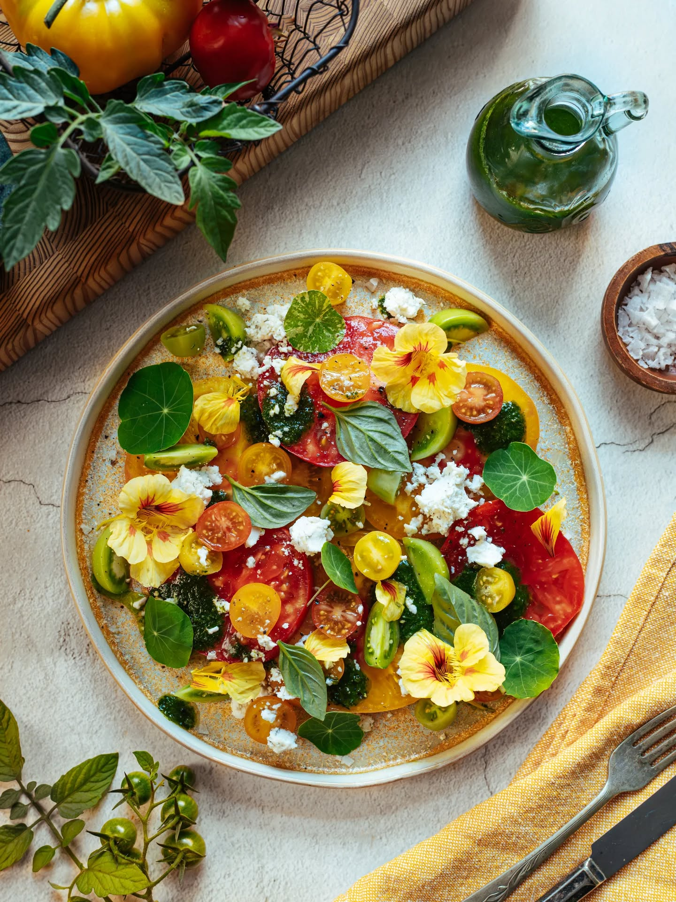
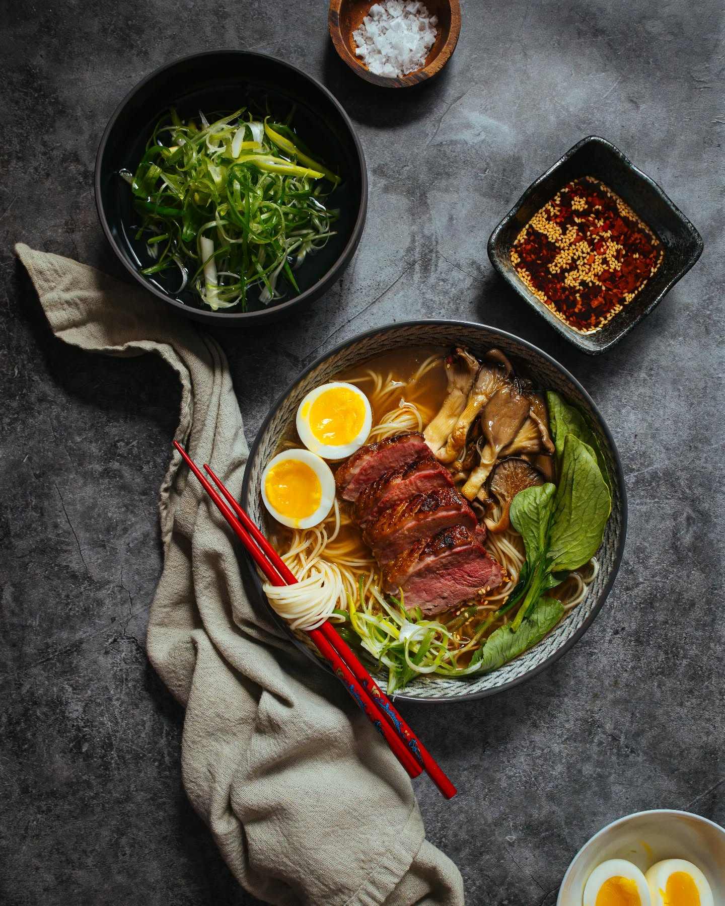
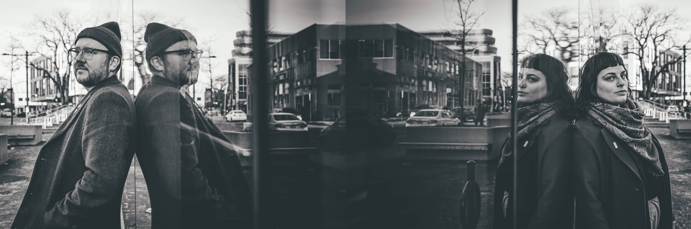
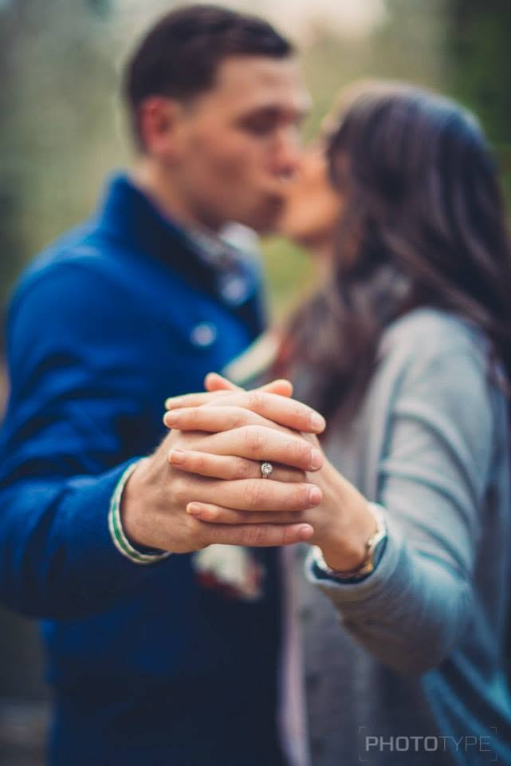
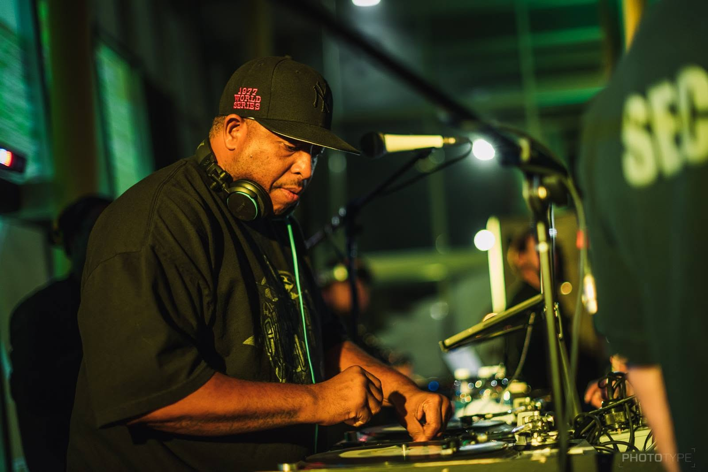
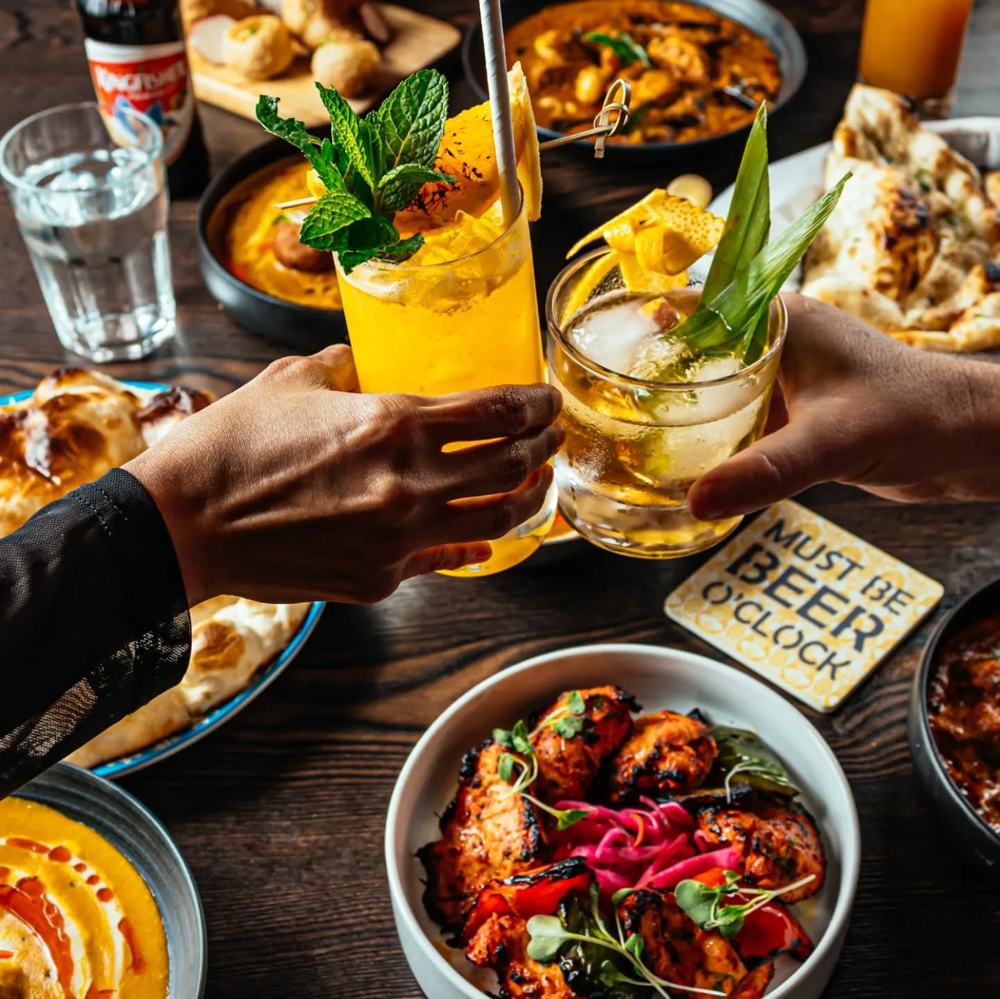

Food Photography
Styled, appetite-driven photography for menus, socials, and brand campaigns.


Developer / Designer / Photographer
Andrew has been into design and technology for as long as he can remember, with a background in IT and Graphic & Digital Media Design.
Photographer
Crissie's passion for photography started when she taught herself to shoot on an old Canon AE-1 film camera. Alongside photography, the culinary arts have always been another creative outlet.

Styled, appetite-driven photography for menus, socials, and brand campaigns.

Documentary-style coverage of your day, from getting-ready to the last dance.

Corporate events, parties, and everything in between, captured candidly.
For weddings, the earlier the better. Busy season (June through October) books up months ahead. Food and event shoots are more flexible; a couple weeks' notice is usually fine, but reach out even if your timeline is tight.
It depends on the shoot. A full wedding day typically comes back with several hundred edited photos; food and event work is scoped to the project. We'll go over specifics before anything is booked so you know exactly what you're getting.
Food and event galleries are usually ready in 1-2 weeks. Weddings take longer since there's more to go through: plan on 4-6 weeks for the full set, though we'll usually get a handful of favourites to you sooner.
Yes, we've shot all over the province. Travel outside the city may come with an added cost depending on distance, so just ask when you get in touch.
